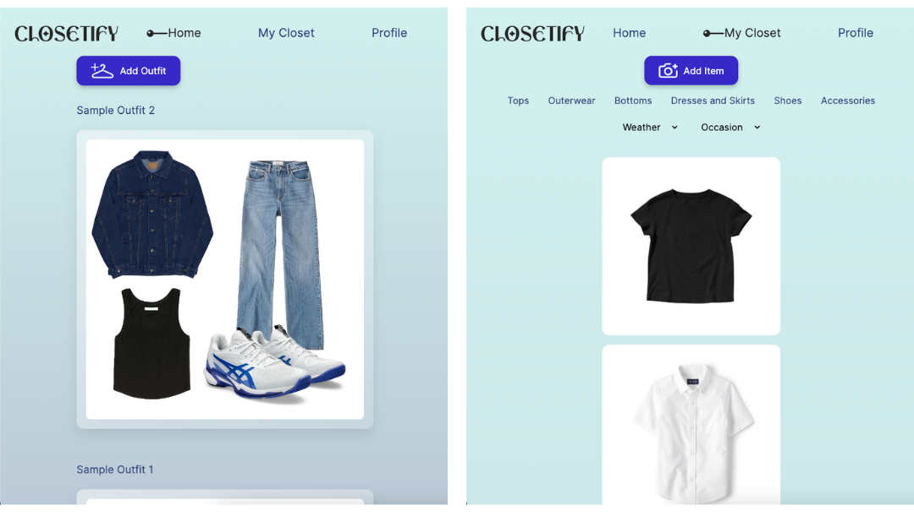
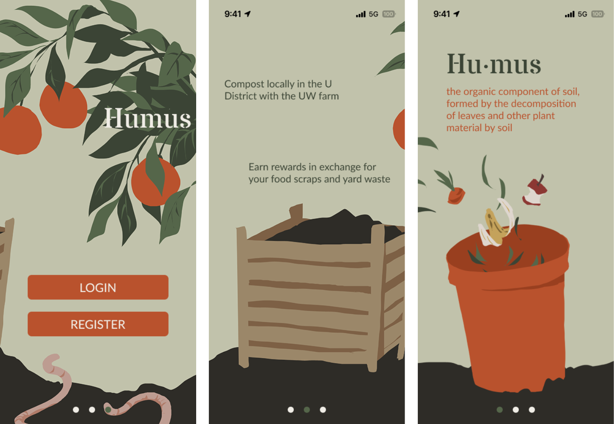
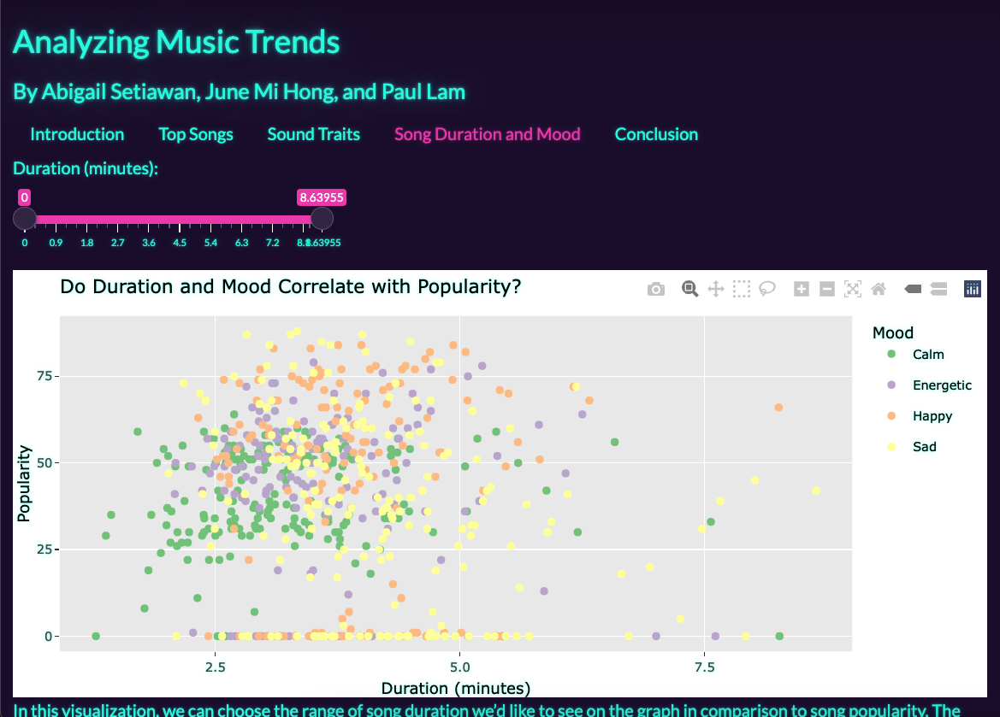
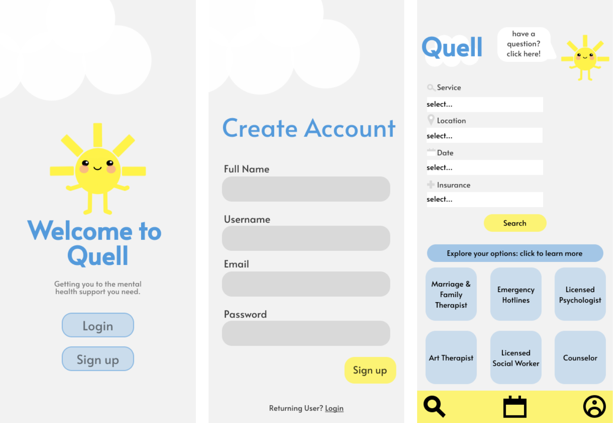

Sep 2025 - Present | Seattle, WA
⭐︎ Cut an executive AI usage dashboard's median load time from ~2 min to under 10s and errors by 94%
⭐︎ Migrated 12 AWS Glue jobs from JSON to Parquet, cutting daily runtime from 2-5 hours to 5-10 min
⭐︎ Automated user identity resolution (99.94% of ~819K resolved), replacing a lossy manual export
⭐︎ Sped up a ~650M-record invoice search from 60s+ timeouts to seconds by removing a full-index sort
⭐︎ Led root-cause review of a 6-day data outage; co-built a monitor that flags gaps within 24 hours
⭐︎ Built least-privilege AI agent tooling that made multi-day manual data backfills self-serve
⭐︎ Redesigned a license platform's homepage (7+ pages into one view) and its top-traffic page
Skills: Python, PySpark, TypeScript, AWS, Data Pipeline Engineering (ETL), Performance Optimization, AI-Native Development & Agent Tooling, Least-Privilege Access Design
Jul 2024 - Sep 2024 | Seattle, WA
⭐︎ Rebuilt a macOS app's front end in Swift from user research, adding device renaming and new layouts
⭐︎ Enabled cross-device sync of account and backup status, removing the need to restart the app
⭐︎ Designed in Figma and built a guided walkthrough covering all features and top user pain points
Skills: Swift/SwiftUI, Figma, Front-End Development, User Research
Jun 2023 - Jun 2024 | Remote
⭐︎ Ran audit tests (CAATs), building data packages and Power BI reports on financial trends
⭐︎ Extracted and cleaned financial data from PDFs using Altair Monarch, regex, and Excel
⭐︎ Coordinated with external teams and Washington State public entities on data formatting, quality issues, and audit deadlines
Skills: SQL, Excel, Power BI, Regular Expression, Data Extraction
Product and Information Systems Management | Sep 2024 - Mar 2025 | Seattle, WA
⭐︎ Prepared materials for and led weekly class sessions for a class of 35 students
⭐︎ Graded coursework and exams
Mar 2024 - Mar 2025
⭐︎ Led end-to-end planning, budgeting, and promotion of 2-3 monthly fundraising, professional, recruiting, and community events
⭐︎ Partnered with external companies and ran weekly meetings to scope projects and delegate tasks

LinkApril - June 2024
⭐︎ Developed the virtual wardrobe feature, allowing users to upload and manage outfits with tags using Firebase’s real-time database and cloud storage
⭐︎ Set up Firebase projects, configuring real-time database and cloud storage integration for seamless data management
⭐︎ Implemented authentication and protected routes using Firebase Auth to enhance security
⭐︎ Contributed to the CI/CD process, debugging implementation errors and improving login stability
Key Skills: HTML, CSS, Firebase, React, Javascript, Figma, Project Management

LinkJanuary - March 2024
⭐︎ Interviewed 20+ users and conducted a survey to research users' situations regarding waste disposal and its environmental impact
⭐︎ Created user personas to better understand and empathize with our target audience
⭐︎ Drafted low fidelity wireframes for a composting service mobile app
⭐︎ Created a high fidelity, interactive wireframes in Figma
Key Skills: Figma, CSP UX Design, Visual Design, UX Research

LinkJanuary - March 2023
⭐︎ Explored a large music dataset from Spotify
⭐︎ Identified trends in how different characteristics of songs can influence the listeners' responses
⭐︎ Used R and R Shiny to visualize the data trends
⭐︎ Created a multi-page Shiny app with custom CSS styles and interactive data visualizations
Key Skills: R, R Shiny, CSS, Data Science, Data Visualizations

LinkSeptember - December 2022
⭐︎ Designed a search engine to help individuals find mental health appointments and resources.
⭐︎ Led a design sprint, including problem analysis, user research, ideation, and wireframing.
⭐︎ Developed a high-fidelity prototype in Figma.
Key Skills: Figma, UX/UI Design, User Research